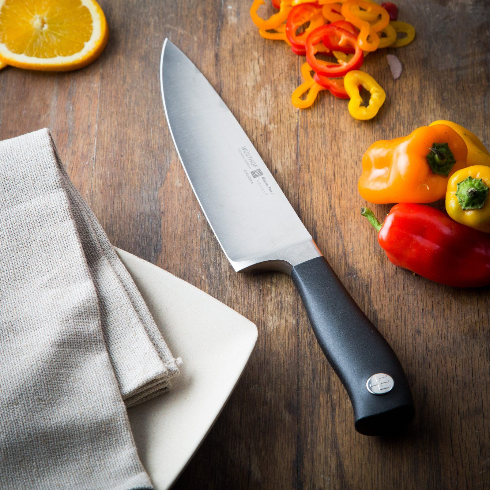

Biriyani Bliss Project is a culinary venture that aims to redefine the experience of enjoying one of the most beloved and iconic dishes in the world – biryani. With a passion for authenticity and a commitment to delivering an unforgettable dining experience, the Biriyani Bliss Project takes pride in sourcing the finest ingredients and employing traditional cooking techniques to create a symphony of flavors in every bite. Our skilled chefs blend aromatic spices and premium rice with succulent meats or flavorful vegetables, crafting biryanis that reflect the rich culinary heritage of this classic dish. Beyond just a meal, the Biriyani Bliss Project seeks to transport diners to a world of gastronomic delight, where the tantalizing aroma and exquisite taste of biryani become a celebration of culture and tradition. Whether you are a biryani enthusiast or a first-time adventurer, the Biriyani Bliss Project invites you to savor the magic of this timeless dish, promising an experience that goes beyond the plate and lingers in your memory. Welcome to a journey of biryani bliss!
